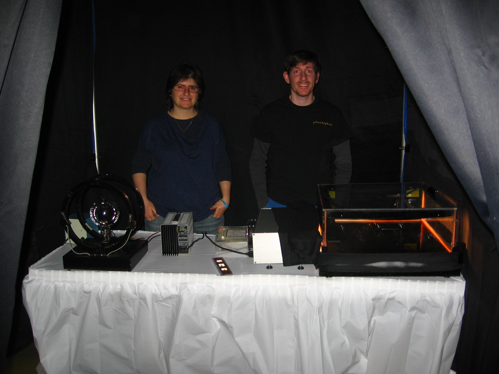

The Johns Hopkins Department of Physics and Astronomy is very committed
to outreach efforts. The department hosts an
annual fair
which exhibits many entertaining and educational demonstrations. In
recent years, I have been responsible for particle physics related
demonstrations which include a cloud chamber and a cosmic ray detector.
In addition to this, myself and others from the high energy physics group
participate in the
USA Science and Engineering Festival
held in Washington, DC.
2012 USA Science & Engineering Festival

This year's science and engineering festival was held at the
Walter E Washington Convention Center.
The exhibit consisted of a cloud chamber, a cosmic ray detector, a cathode-ray, and
a mock accelerator for kids. The picture to the left shows our post-doc, Sara
Bolognesi, and me in behind the cloud chamber and the cathode-ray.